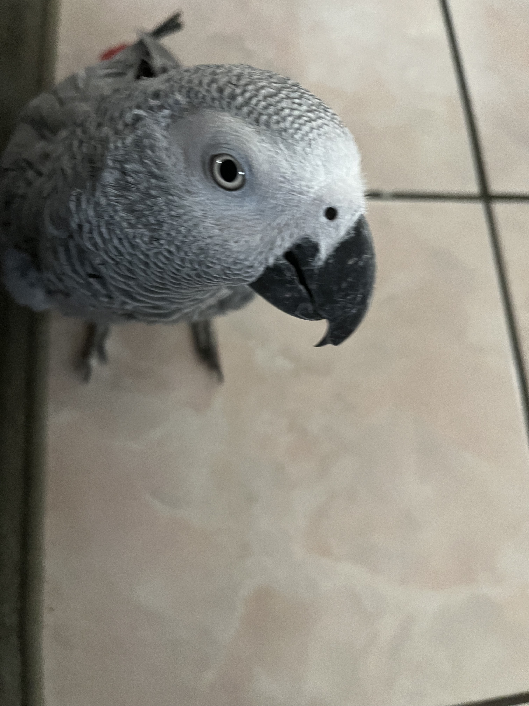
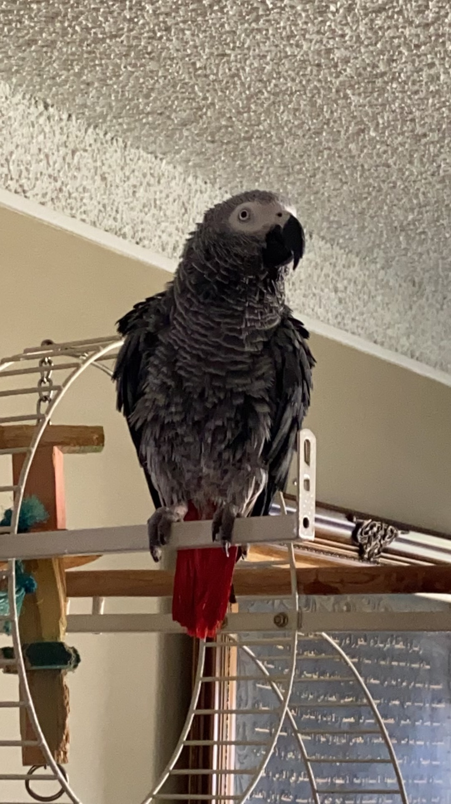

Riley

Riley is a 2yr old goldendoodle. He is very active and loves attention. Riley can be pretty mischievous; as such, his favorite activity is begging for (or stealing) food, however getting cuddled on a cool floor comes as a close second. In addition, Riley loves to walk in his local park or hang out with his best friend Cosmo.
Riley would NOT survive in the wild. He is very stubborn, jealous, and pampered. He’s currently in his “terrible twos,” and must get everything his way. That said, Riley is loved by his family as a perfect, funny, and loyal dog.
Photo Gallery


Likes
Zack
Zack is an African grey parrot, aged around three years old. Zack loves flying and being outside of the cage at all times. He’s very nice but bites so much.
Zack’s favorite foods are unsalted sunflower seeds and mangos. He loves being able to sit on people’s shoulders and talking to them. Zack knows over 500 words and learns more every day.
Photo Gallery



Likes
- Sunflower seeds
- Flying
- Going on Walks
Basil

Basil, otherwise known as Slaysil, is a very energetic white, slightly crusty and trusty, dog (bichon) . She gets princess treatment in her household, but also out in public. As a consequence, she is very clingy and loves to lick, especially in the face.
She endeavors in multiple hobbies and activities, which include flying, licking, standing on two legs, ringing bells, and jumping through hula hoops.
Photo Gallery


Likes
- Empty water bottles
- Socks
- Cats
Honey

Honeys favorite thing in the world is swimming. Even if it is the middle of January and half of the lake is frozen, Honey will be in the water. She is a smart swimmer, so when my brother and I go underwater, she will follow our air bubbles and be waiting for us when we come up for air.
While most dogs like to chase balls or sticks, Honey likes to chase rocks. She will even chase rocks into the water and stick her whole face in the water to try and find the rock thrown. Chasing rocks is her main form of exercise right now as she refuses to go on walks from our house. If we drive her to another spot and walk from there, Honey will go on a walk but she refuses to leave our driveway when we try to walk from home. Finally one other Honey-ism is that her safe place is bathtubs. Many times our family has woken up in the middle of the night and found Honey is a bathtub
Photo Gallery


Likes
- Likes rocks
- Likes food
- Likes attention
Chunky Doll (Chonks)

Chunky Doll or as he prefers to respond to, Chocks, is a 4-year-old ragdoll. His name was inspired by his breed and looks. As a kitten, he was even chunkier and blended right in with a fluffy white rug we had that he loved playing hide and seek in. He’s a very lazy but playful cat, only playful when he feels like it.
He is a pretty but very difficult cat as he is white but hates showers and loves rolling around in the house collecting dust. To get him into a bath we often have to lure him in with fake human treats. And even then he jumps right out of the bath and runs around the whole bathroom making the floors wet. Nevertheless, he’s a very soft, cuddly, and loving cat.
Photo Gallery


Likes
- Human treats
- Naps
- Cuddles